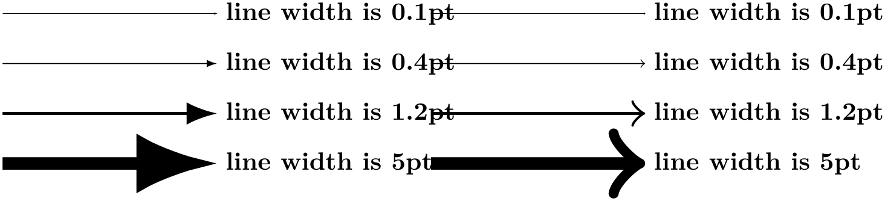

The TikZ and PGF Packages
Manual for version 3.1.10
The Basic Layer
105 Defining New Arrow Tip Kinds¶
105.1 Overview¶
In present section we have a look at how you can define new arrow tips for use in pgf. The low-level commands for selecting which arrow tips are to be used have already been described in Section 104.3, the general syntax rules for using arrows are detailed in Section 16. Although Section 16 describes the use of arrows in TikZ, in reality, TikZ itself does not actually do anything about arrow tips; all of the functionality is implemented on the pgf level in the commands described in Section 16. Indeed, even the /.tip key handler described in Section 16 is actually implemented on the pgf layer.
What has not yet been covered is how you can actually define a complete new arrow tip. In pgf, arrows are “meta-arrows” in the same way that fonts in TeX are “meta-fonts”. When a meta-arrow is resized, it is not simply scaled, but a possibly complicated transformation is applied to the size.
A meta-font is not one particular font at a specific size with a specific stroke width (and with a large number of other parameters being fixed). Rather, it is a “blueprint” (actually, more like a program) for generating such a font at a particular size and width. This allows the designer of a meta-font to make sure that, say, the font is somewhat thicker and wider at very small sizes. To appreciate the difference: Compare the following texts: “Berlin” and “”. The first is a “normal” text, the second is the tiny version scaled by a factor of two. Obviously, the first look better. Now, compare “” and “Berlin”. This time, the normal text was scaled down, while the second text is a “normal” tiny text. The second text is easier to read.
pgf’s meta-arrows work in a similar fashion: The shape of an arrow tip can vary according to a great number of parameters, the line width of the arrow tip being one of them. Thus, an arrow tip drawn at a line width of 5pt will typically not be five times as large as an arrow tip of line width 1pt. Instead, the size of the arrow will get bigger only slowly as the line width increases.
To appreciate the difference, here are the Latex and Classical TikZ Rightarrow arrows, as drawn by pgf at four different sizes:
Here, by comparison, are the same arrows when they are simply “resized”:

As can be seen, simple scaling produces arrow tips that are way too large at larger sizes and way too small at smaller sizes.
In addition to the line width, other options may also influence the appearance of an arrow tip. In particular, the width of the inner line (the line used to create the effect of a double line) influences arrow tips as well as other options that are specific to the arrow tip.
105.2 Terminology¶
Before we have a look at the exact commands used for defining arrow tips, we need to fix some terminology. Consider the following drawing of an arrow tip where the arrow tip is drawn transparently so that we can see what is “happening behind it”:
I have also added a coordinate system. The code for drawing an arrow tip always draws it in the way shown above: Pointing right along the \(x\)-axis.
We will use the following terminology:
-
• The point where tip of the arrow ends is called the tip end. It is at \((1,0)\) in our example and we always assume it to lie on the \(x\)-axis, so we just treat it as a distance, 1 in this case. This is the position where the original path was supposed to end (so if the arrow tip had not been added to the red path, it would have ended here).
-
• The back end of the arrow is where a vertical line just to the left of the arrow intersects the \(x\)-axis. In our case, this is the point \((-3,0)\) and again we treat it as a distance, \(-3\) in this case.
-
• The line end is the position where the path now ends. This should be a position inside the arrow head that gets “covered” by the path. Note that a path may have a round or a rect head and should still be covered. Clearly, necessary shortening of the path will be the difference between the tip end and the line end.
-
• The visual back end is the position where the path and the the arrow head “meet last” on the path. In our case, because of the inset, the visual back end is not the same as the back end: The arrow ends “visually” at \((-2,0)\). The difference between the back end and the visual back end is important when the arrow tip is flexed, see Section 16.3.8 for an explanation of flexing.
-
• There is also a visual tip end, the counterpart of the visual back end for the front. In our case, the visual tip end and the tip end obviously coincide, but if we were to reverse the arrow tip, the visual tip end would be different from the tip end (while the visual back end would then coincide with the new back end).
-
• There are four points that make up the convex hull of the arrow tip: \((1,0)\), \((-3,2)\), and \((-3,-2)\).
Normally, pgf automatically keeps track of a bounding box of everything you draw. However, since arrow tips are drawn so often, pgf caches the code needing for drawing arrow tips internally and because of this cache it cannot determine the size of the arrow tip just based on the drawing commands used for drawing the tip. Instead, a convex hull of the arrow tip must be explicitly provided in the definition.
When you design a new arrow tip, all of the above parameters must be defined.
105.3 Caching and Rendering of Arrows¶
As a last preparation for the description of the commands for declaring arrows, it is important to understand the exact process by which pgf draws arrows.
-
1. First, you have to define an arrow tip kind using \pgfdeclarearrow{name=foo,.... This will tell pgf that foo is now the name of an arrow tip. In particular, the parser for arrow tip specifications will now treat foo as the name of an arrow tip and will not try to consider f, o, and o as the names of single-char shorthands.
Other than storing the definitions in the declaration internally, this command has little other effect. In particular, no drawing or other processing takes place.
-
2. Now assume that at some point the arrow tip foo is actually used. In this case, certain options may have been set, for instance the user may have requested the arrow tip foo[length=5pt,open]. What happens next depends on whether it is the first time the arrow tip foo is used with these exact options or not.
-
3. Assume that is the first time foo is requested at a length of 5pt and in an “open” version. pgf now retrieves the definition of the arrow tip kind that it stored in the first step and executes the so-called setup code. When this code is executed, all the options will be in force (for instance, \pgfarrowlength will equal 5pt in our case). The job of the setup code is two-fold: First, it needs to compute all of the parameters listed in Section 105.2, that is, it has to compute where the tip end will lie in the arrow tip’s coordinate system at the particular size of 5pt, where the back end will be, where the convex hull points lie, and so on. Second, the setup code should precompute values that will be important for constructing the path of the arrow. In our example, there is little to do in this regard, but for more complicated arrows, all time-consuming preparations are done now.
It is not the job of the setup to actually draw the arrow tip, only to “prepare” this as much as possible.
The setup code will always be executed only once for each arrow tip kind for a given set of options. Thus, when a user uses foo[length=5pt,open] once more later anywhere in the document, the setup code will not be executed again.
-
4. The next thing that happens is that we have a look at the drawing code stored in the code field of the arrow. In our example, the drawing code would consist of creating a filled path with four straight segments.
In most cases, what happens now is that the drawing code is executed in a special sandbox in which the low-level driver commands that do the actual drawing are intercepted and stored away in a so-called cache. Once such a cache has been created, its contents will be reused whenever foo[length=5pt,open] is requested by a user and just like the setup code, the drawing code will not be executed again.
There are, however, two cases in which the drawing code gets executed each time the arrow is used: First, an arrow tip kind can specify that this should always happen by saying cache=false in its definition. This is necessary if the drawing code contains low-level drawing commands that cannot be intercepted such as a use of \pgftext for arrow tips that “contain text”. Second, when the bend option is used, the same arrow tip will look different each time it is used, namely in dependence on the exact curvature of the path to which it is added.
Because the drawing code may be executed several times, while the setup code may not, we must find a way to “communicate” the values computed by the setup code to the drawing code. This is done by explicitly calling \pgfarrowssave inside the setup code. Whatever is “saved” in this way is restored each time before the drawing code is executed.
As can be seen, the process is a bit involved, but it leads to a reasonably fast arrow tip management.
105.4 Declaring an Arrow Tip Kind¶
-
\pgfdeclarearrow{⟨config⟩} ¶
-
• name=⟨name⟩ or name=⟨start name⟩-⟨end name⟩
This defines the name of the arrow tip. It is legal to define an arrow tip a second time, in this case the previous definition will be overwritten in the current TeX scope. It is customary to use a name with an uppercase first letter for a “complete” arrow tip kind. Short names and lower case names should be used for shorthands that change their meaning inside a document, while arrow tips with uppercase first letters should not be redefined.
If the name contains a hyphen, the second syntax is assumed and everything before the hyphen will be the name used in start arrow specifications, while the text after the hyphen is the name used in end specifications.
-
• parameters={⟨list of macros⟩}
As explained earlier, an arrow tip typically needs to be redrawn each time an option like length or inset is changed. However, for some arrow tips, the inset has no influence, while for other it is important whether the arrow is reversed or not. (How keys like length actually set TeX dimensions like \pgfarrowlength is explained in Section 105.5.)
The job of the parameters key is to specify which dependencies the arrow tip has. Everything that will influence any of the parameters computed in the setup code or used in the drawing code should be listed here.
The ⟨list of macros⟩ will be used inside a \csname-\endcsname pair and should expand to the current values of the relevant parameters have. For example, if the arrow tip depends on the current value of \pgfarrowlength and \pgfarrowwidth only, then ⟨list of macros⟩ should be set to \the\pgfarrowlength,\the\pgfarrowwidth. (Actually, the comma is optional, the ⟨list of macros⟩ does not really have to be a list, just something that can be expanded unambiguously.)
Note that the line width (\pgflinewidth) and the inner line width (\pgfinnerlinewidth) are always parameters and need not be specified in the parameters.
It is important to get this parameter right. Otherwise, arrow tips may look wrong because pgf thinks that it can reuse some code when, in reality, this code actually depends on a parameter not listed here.
-
• setup code={⟨code⟩}
When an arrow tip is used, the value stored in parameters is expanded and it is tested whether the result was encountered before. If not, the ⟨code⟩ gets executed (only this once). The code can now do arbitrarily complicated computations the prepare the later drawing of the arrow tip. Also the ⟨code⟩ must specify the different tip and back ends and the convex hull points. This is done by calling the following macros inside the ⟨code⟩:
-
\pgfarrowssettipend{⟨dimension⟩} ¶
When this command is called inside the setup code of an arrow tip, it specifies that the tip of the drawn arrow will end exactly at ⟨dimension⟩. For example, for our earlier example of the large arrow tip, where the tip end was at 1cm, we would call
\pgfarrowssettipend{1cm}
Note that for efficiency reasons, the ⟨dimension⟩ is not passed through \pgfmathsetlength; rather what happens is that \pgf@x=⟨dimension⟩ gets executed. In particular, you can pack further computations into the ⟨dimension⟩ by simply starting it with a number and then appending some code that modifies \pgf@x. Here is an example where instead of 1cm we use \(1\mathrm {cm} - \frac 12\mathrm {linewidth}\) as the tip end:
\pgfarrowssettipend{1cm\advance\pgf@x by-.5\pgflinewidth}
If the command is not called at all inside the setup code, the tip end is set to 0pt.
-
\pgfarrowssetbackend{⟨dimension⟩} ¶
Works like the command for the tip end, only it sets the back end. In our example we would call
\pgfarrowssettipend{-3cm}
Defaults to 0pt.
-
\pgfarrowssetlineend{⟨dimension⟩} ¶
Sets the line end, so in the example we have \pgfarrowssettipend{-1cm}. Default to 0pt.
-
\pgfarrowssetvisualbackend{⟨dimension⟩} ¶
Sets the visual back end, \pgfarrowssetvisualbackend{-2cm} in our example. Default to the value of the normal back end.
-
\pgfarrowssetvisualtipend{⟨dimension⟩} ¶
Sets the visual tip end. Default to the value of the normal tip end and, thus, we need not set it in our example.
-
\pgfarrowshullpoint{⟨x dimension⟩}{⟨y dimension⟩} ¶
Adds a point to the convex hull of the arrow tip. As for the previous commands, no math parsing is done; instead pgf says \pgf@x=⟨x dimension⟩ and then \pgf@y=⟨y dimension⟩. Thus, both “dimensions” can contain code for advancing and thus modifying \pgf@x and \pgf@y.
In our example we would write
\pgfarrowshullpoint{1cm}{0pt}
\pgfarrowshullpoint{-3cm}{2cm}
\pgfarrowshullpoint{-3cm}{-2cm}
-
\pgfarrowsupperhullpoint{⟨x dimension⟩}{⟨y dimension⟩} ¶
This command works like the previous command, only it normally adds two points to the convex hull: First, the point \((\meta {x dimension},\meta {y dimension})\) and, secondly, the point \((\meta {x dimension},-\meta {y dimension})\). However, the second point is only added if the arrow is not a harpoon.
Thus, in our example we could simplify the convex hull to
\pgfarrowshullpoint{1cm}{0pt}
\pgfarrowsupperhullpoint{-3cm}{2cm}
If the ⟨y dimension⟩ is zero or less, only one point, namely \((\meta {x dimension},\meta {y dimension})\), is added to the hull. Thus, we could also have used the upper convex hull command in the first of the two of the above commands.
-
\pgfarrowssave{⟨macro⟩} ¶
As explained earlier, the setup code needs to “communicate” with the drawing code via “saved values”. This command get the name of a macro and will store the value this macro had internally. Then, each time drawing code is executed, the value of this macro will be restored.
-
\pgfarrowssavethe{⟨register⟩} ¶
Works like \pgfarrowssave, only the parameter must be a register and \the⟨register⟩ will be saved. Typically, you will write something like
\pgfarrowssavethe{\pgfarrowlength}
\pgfarrowssavethe{\pgfarrowwidth}
To ensure that inside the drawing code the the dimension registers \pgfarrowlength and \pgfarrowwidth are setup with the values they had during the setup.
-
-
• drawing code={⟨code⟩}
This code will be executed at least once for each setting of the parameters when the time arrow tip is actually drawn. Usually, this one execution will be all and the low-level commands generated inside the ⟨code⟩ will we stored in a special cache; but in some cases the ⟨code⟩ gets executed each time the arrow tip is used, so do not assume anything about it. Inside the ⟨code⟩, you have access to all values that were saved in the setup code as well as to the line width.
The ⟨code⟩ should draw the arrow tip “going right along the \(x\)-axis”. pgf will take care of setting up a canvas transformation beforehand to a rotation such that when the drawing is rendered, the arrow tip that is actually drawn points in the direction of the line. Alternatively, when bending is switched on, even more complicated low-level transformations will be done automatically.
The are some special considerations concerning the ⟨code⟩:
-
– In the ⟨code⟩ you may not use \pgfusepath since this would try to add arrow tips to the arrow tip and lead to a recursion. Use the “quick” versions \pgfusepathqstroke and so on instead, which never try to add arrow tips.
-
– If you stroke the path that you construct, you should first set the dashing to solid and set up fixed joins and caps, as needed. This will ensure that the arrow tip will always look the same.
-
– When the arrow tip code is executed, it is automatically put inside a low-level scope, so nothing will “leak out” from the scope.
-
– The high-level coordinate transformation matrix will be set to the identity matrix when the code is executed for the first time.
-
-
• cache=⟨true or false⟩
When set to true, which is the default, the ⟨code⟩ will be executed only once for a particular value of parameters and the low-level commands created by the drawing code (using the system layer protocol subsystem, see Section 122) will be cached and reused later on. However, when the drawing code contains “uncacheable” code like a call to \pgftext, caching must be switched off by saying cache=false.
-
• bending mode=⟨mode⟩
This key is important only when the bend option is used with an arrow, see Section 16.3.8 for an introduction to this option. The bend option asks us to, well, bend the arrow head. For some arrow head this is not possible or leads to very strange drawings (for instance, when the \pgftext command is used) and then it is better to switch bending off for the arrow head (flex will then be used instead). To achieve this, set ⟨mode⟩ to none.
For most arrow tips it does, however, make sense to bend them. There are (at least) two different mathematical ways of doing so, see Section 108.4.7 for details. Which of these ways is use can be configured by setting ⟨mode⟩ to either orthogonal or to polar. It is best to try simply try out both when designing an arrow tip to see which works better. Since orthogonal is quicker and often gives good or even better results, it is the default. Some arrow tips, however, profit from saying bending mode=polar.
-
• defaults=⟨arrow keys⟩
The ⟨arrow keys⟩ allow you to configure the default values for the parameters on which an arrow tip depends. The ⟨arrow keys⟩ will be executed first before any other arrow tip options are executed, see Section 16.4.5 for the exact sequence. Also see Section 105.5 below for more details on arrow options.
-
• First, you must provide a name just in the same way as when you define a full-flung new arrow tip kind.
-
• Second, instead of all of the other options listed above, you just use one more option:
means=⟨end arrow specification⟩
This sets up things so that whenever ⟨name⟩ is now used in an arrow specification, it will be replaced by the ⟨end arrow specification⟩ (the problems resulting form the ⟨name⟩ begin used in a start arrow specification are taken care of automatically). See also Section 16.4.4 for details on the order in which options get executed in such cases.
Note that the ⟨end arrow specification⟩ will be executed immediately to build the so-called arrow option caches, a concept explored in more detail in Section 105.5.4. In practice, this has mainly two effects: First, all arrow tips referred to in the specification must already exist (at least as “dummy” versions). Second, all dimensions mentioned in options of the ⟨end arrow specification⟩ will be evaluated immediately. For instance, when you write
\pgfdeclarearrow{ name=foo, means = bar[length=2cm+\mydimen] }
The value 2cm+\mydimen is evaluated immediately. When foo is used later on and \mydimen has changed, this has no effect.
This command is both used to define a new arrow tip kind and to to declare a so-called shorthand. We have a look at the case that a complete new arrow tip kind is created and then have a look how the command can be used to create shorthands.
Defining a Complete New Arrow Tip Kind. The ⟨config⟩ is a key–value list in which different keys are used to setup the to-be defined arrow. The following keys can be given:
This concludes the description of the keys you provide for the declaration of an arrow. Let us now have a look at a simple example that uses these features: We want to define an arrow tip kind foo that produces the arrow tip we used as our running example. However, to make things a bit more interesting, let us make it “configurable” insofar as the length of the arrow tip can be configured using the length option, which sets the \pgfarrowlength. By default, this length should be the gigantic 4cm we say in the example, but uses should be able to set it to anything they like. We will not worry about the arrow width or insets, of arrow line width, or harpoons, or anything else in this example to keep it simple.
Here is the code:
\pgfdeclarearrow{
name
=
foo,
parameters
=
{ \the\pgfarrowlength },
setup
code
=
{
% The different end values:
\pgfarrowssettipend{.25\pgfarrowlength}
\pgfarrowssetlineend{-.25\pgfarrowlength}
\pgfarrowssetvisualbackend{-.5\pgfarrowlength}
\pgfarrowssetbackend{-.75\pgfarrowlength}
% The hull
\pgfarrowshullpoint{.25\pgfarrowlength}{0pt}
\pgfarrowshullpoint{-.75\pgfarrowlength}{.5\pgfarrowlength}
\pgfarrowshullpoint{-.75\pgfarrowlength}{-.5\pgfarrowlength}
% Saves: Only the length:
\pgfarrowssavethe\pgfarrowlength
},
drawing
code
=
{
\pgfpathmoveto{\pgfqpoint{.25\pgfarrowlength}{0pt}}
\pgfpathlineto{\pgfqpoint{-.75\pgfarrowlength}{.5\pgfarrowlength}}
\pgfpathlineto{\pgfqpoint{-.5\pgfarrowlength}{0pt}}
\pgfpathlineto{\pgfqpoint{-.75\pgfarrowlength}{-.5\pgfarrowlength}}
\pgfpathclose
\pgfusepathqfill
},
defaults
=
{ length
=
4cm
}
}
We can now use it:
Defining a Shorthand. The \pgfdeclarearrow command can also used to define shorthands. This works as follows:
105.5 Handling Arrow Options¶
When you declare an arrow tip, your drawing code should take into account the different arrow keys set for it (like the arrow tip length, width, or harpooning). The different arrow keys that are available have been described in detail in Section 16.3; but how do we access the values set by an option like length or harpoon or bend in the drawing code? In the present section we have a look at how this works.
105.5.1 Dimension Options¶
Most arrow keys, like length or width', simple set a TeX dimension register to a certain value. For example, length sets the value of the TeX dimension register \pgfarrowlength. Note that length takes several values as input with a complicated semantics as explained for the length key in section 16.3.1. All of these settings are not important for the setup code: When it gets executed, the code behind the length key will have computed a simple number that is stored in \pgfarrowlength. Indeed, inside the setup code you do not have access to the exact value given to the length key; just to the final computed value.
The following TeX dimensions are available to the setup code:
-
• \pgfarrowslength. It gets set by the arrow keys length and angle.
-
• \pgfarrowswidth. It gets set by width, width', and angle.
-
• \pgfarrowsinset. It gets set by inset and inset'.
-
• \pgfarrowslinewidth. It gets set by line width and line width'.
If your setup code depends on any of them, add them to the parameters key of the arrow tip.
105.5.2 True–False Options¶
A number of arrow keys just do a yes/no switch, like reversed. All of them setup a TeX-if that you can access in the setup code:
-
• \ifpgfarrowreversed is setup by reversed.
-
• \ifpgfarrowswap is setup by swap and also right.
-
• \ifpgfarrowharpoon is setup by harpoon and also left and right.
-
• \ifpgfarrowroundcap is set to true by line cap=round and set to false by line cap=butt. It also gets (re)set by round and sharp.
-
• \ifpgfarrowroundjoin is set to true by line join=round and set to false by line join=miter. It also gets (re)set by round and sharp.
-
• \ifpgfarrowopen is set to true by fill=none and by open (which is a shorthand for fill=none) and set to false by color and all other fill=⟨color⟩.
If you code depends on any of these, you must add them to the parameters in such a way that the parameters are different when the TeX-if is set from when it is not set. An easy way to achieve this is to write something like
parameters
=
{ \the\pgfarrowlength,...,
\ifpgfarrowharpoon h\fi\
\ifpgfarrowroundjoin j\fi}
In other words, for each set parameter on which the arrow tip depends, a specific letter is added to the parameters, making them unique.
The first two of the above keys are a bit special: Reversing and swapping an arrow tip can be done just by fiddling with the transformation matrix: a reverse is a “flip” along the \(y\)-axis and a swap is a flip along the \(x\)-axis. This is done automatically by pgf.
Nevertheless, you may wish to modify you code in dependence especially of the reverse key: When \ifpgfarrowreverse is true, pgf will flip the coordinate system along the \(y\)-axis, will negate all end values (like line end, tip end, and so on) and will exchange the meaning of back end and tip end as well as of visual back end and visual back end. Usually, this is exactly what one need; except that the line end may no longer be appropriate. After all, the line end should be chosen so that it is completely covered by the arrow. Now, when the arrow tip is open, a reversed arrow should no longer have the line end near the old visual back end, but near to the old visual tip end.
For these reasons, you may need to make the computation of the line end dependent on whether the arrow is reversed or not. Note that when you specify a different line end for a reversed arrow tip, the transformation and inverting of the coordinate system will still be done, meaning that if reverse is true, you need to specify a line end in the “old” coordinate system that is at the position where, after everything is inverted, it will be at the correct position. Usually that means that if the reverse option is set, you need to increase the line end.
105.5.3 Inaccessible Options¶
There are some options that influence the way an arrow tip looks, but that you cannot access inside the setup code. Handling these options lies entirely with pgf. If you wish your setup code to handle these options, you have to setup your own “parallel” options.
-
• quick, flex, flex', and bend are all handled automatically. You can, however, set the bending mode to avoid bending of your arrow tip.
-
• The colors set by color and fill. You can, however, access them indirectly, namely through the current stroke and fill colors.
-
• sep
105.5.4 Defining New Arrow Keys¶
The set of predefined options is already quite long and most arrow tips will not need more than the predefined options. However, sometimes an arrow tip may need to introduce a new special-purpose option. For instance, suppose we wish to introduce a new fictive arrow key depth. In such cases, you must do two things:
-
1. Introduce a new dimension register or macro that will hold the configuration value and which will be accessed by the setup code. The could be achieved by saying
\newdimen\pgfarrowdepth
-
2. Introduce a new arrow key option /pgf/arrow keys/depth that allows users to configure the new macro or register.
When an arrow is selected via for instance foo[depth=5pt], the key–value pairs between the square brackets are executed with the path prefix /pgf/arrow keys. Thus, in the example, our depth key would get executed. Thus, it is tempting to write something like
\pgfkeys{/pgf/arrow keys/depth/.code =
\pgfmathsetlength{\pgfarrowdepth}{#1}}
Sadly, this will not work. The reason is that there is yet another level of caching involved when pgf processes arrow tips: The option cache! The problem is each time an arrow tip is used, even when the drawing code of the arrow tip is nicely cached, we still need to process the options in foo[length=5pt] to find out which version in the cache we would like to access. To make matters worse, foo might be a shorthand that calls other arrow tips, which add more options, and so on. Unfortunately, executing keys is quite an expensive operation (pgf’s key–value parser is powerful, but that power comes at a price). So, whenever possible, we do not want the key–value parser to be started.
For these reasons, when something like foo[⟨options⟩] is encountered inside a shorthand, the ⟨options⟩ are executed only once. They should now setup the arrow option cache, which is some code that, when executed, should setup the values that the ⟨options⟩ configure. In our example, the depth key should add something to the arrow option cache that sets \pgfarrowdepth to the given value.
Adding something to the arrow option cache is done using the following command:
-
\pgfarrowsaddtooptions{⟨code⟩} ¶
This command should be called by keys with the prefix /pgf/arrow keys to add code to the arrow option cache. For our depth key example, we could use this key as follows:
\pgfkeys{/pgf/arrow keys/depth/.code=
\pgfarrowsaddtooptions{\pgfmathsetlength{\pgfarrowdepth}{#1}}
Actually, this is still not optimal since the expensive \pgfmathsetlength command is now called each time an arrow tip is used with the depth option set. The trick is to do the expensive operation only once and then store only very quick code in the arrow option cache:
\pgfkeys{/pgf/arrow keys/depth/.code=
\pgfmathsetlength{\somedimen}{#1}
\pgfarrowsaddtooptions{\pgfarrowdepth=\somedimen} % buggy
The above code will not (yet) work since \somedimen will surely have a different value when the cache is executed. The trick is to use some \expandafters:
\pgfkeys{/pgf/arrow keys/depth/.code=
\pgfmathsetlength{\somedimen}{#1}
\expandafter\pgfarrowsaddtooptions\expandafter{\expandafter\pgfarrowdepth\expandafter=\the\somedimen}
-
\pgfarrowsaddtolateoptions{⟨code⟩} ¶
This command works like \pgfarrowsaddtooptions, only the ⟨code⟩ will be executed “later” than the code added by the normal version of the command. This is useful for keys that depend on the length of an arrow: Keys like width' want to define the arrow width as a multiple of the arrow length, but when the width' key is given, the length may not yet have been specified. By making the computation of the width a “late” option, we ensure that \pgfarrowlength will have been setup correctly.
If you define a new option that sets a dimensions and if that dimension should change in accordance to the setting of either scale length or scale width, you need to make pgf “aware” of this using the following key:
-
\pgfarrowsaddtolengthscalelist{⟨dimension register⟩} ¶
Each time an arrow tip is used, the given ⟨dimension register⟩ will be multiplied by the scale length factor prior to the actual drawing. You call this command only once in the preamble somewhere.
-
\pgfarrowsaddtowidthscalelist{⟨dimension register⟩} ¶
Works like \pgfarrowsaddtolengthscalelist, only for width parameters.
-
\pgfarrowsthreeparameters{⟨line-width dependent size specification⟩} ¶
This command is useful for parsing the values given to keys like length or width the expect a dimension followed optionally for some numbers. This command converts the ⟨line-width dependent size specification⟩, which may consist of one, two, or three numbers, into a triple of three numbers in curly braces, which gets stored in the macro \pgfarrowstheparameters. Here is an example, where \showvalueofmacro is used in this example to show the value stored in a macro:
{2.0pt}{1}{0}
\pgfarrowsthreeparameters{2pt
1}
\showvalueofmacro\pgfarrowstheparameters
-
\pgfarrowslinewidthdependent{⟨dimension⟩}{⟨line width factor⟩}{⟨outer factor⟩} ¶
This command takes three parameters and does the “line width dependent computation” described in section 16.3.1 for the length key. The result is returned in \pgf@x.
The idea is that you can setup line-width dependent keys like length or width using code like the following:
\pgfkeys{/pgf/arrow keys/depth/.code={%
\pgfarrowsthreeparameters{#1}%
\expandafter\pgfarrowsaddtolateoptions\expandafter{%
\expandafter\pgfarrowslinewidthdependent\pgfarrowstheparameters% compute...
\pgfarrowdepth\pgf@x% ... and store.
}%
}
-
\pgfarrowslengthdependent{⟨dimension⟩}{⟨length factor⟩}{⟨dummy⟩} ¶
This command takes three parameters, of which the last one is ignored, and does the “length dependent computation” described for the width' and inset' keys. The result is returned in \pgf@x.
You can setup length dependent keys using code like the following:
\pgfkeys{/pgf/arrow keys/depth'/.code={%
\pgfarrowsthreeparameters{#1}%
\expandafter\pgfarrowsaddtolateoptions\expandafter{%
\expandafter\pgfarrowslengthdependent\pgfarrowstheparameters% compute...
\pgfarrowdepth\pgf@x% ... and store.
}%
}